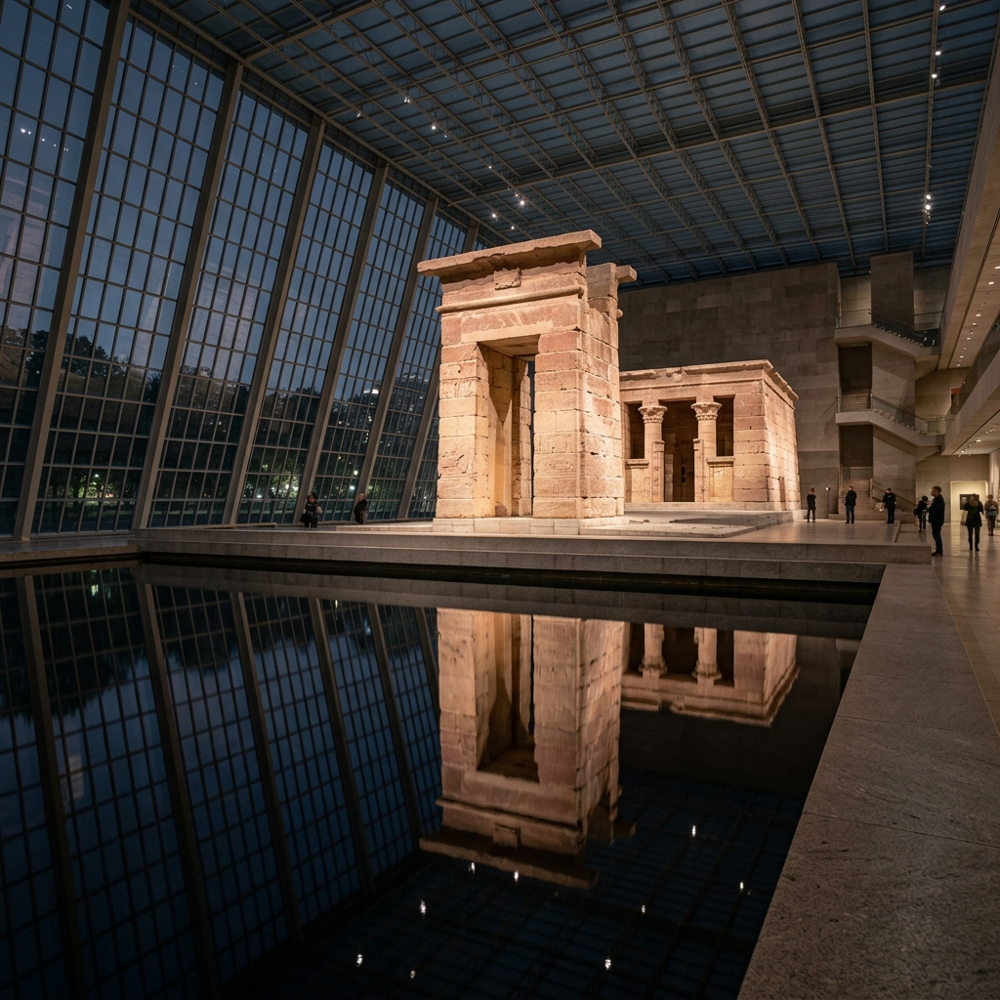
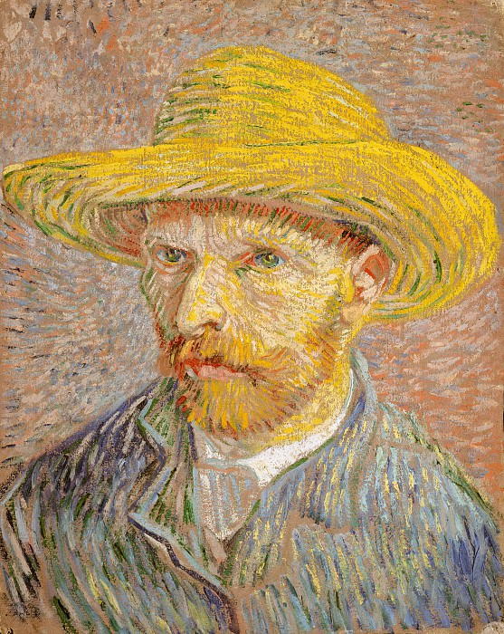
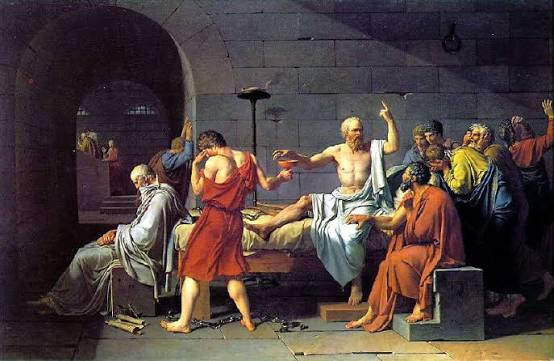
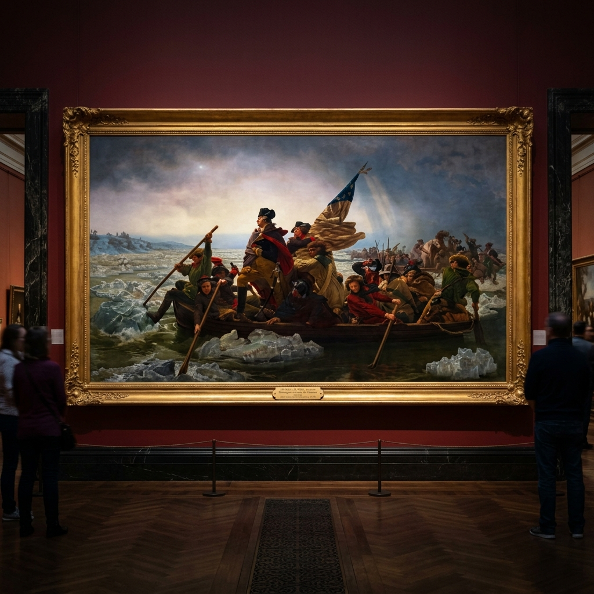
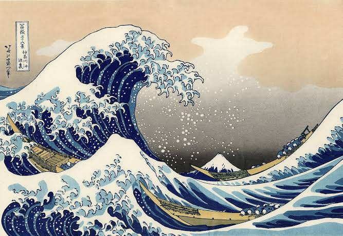
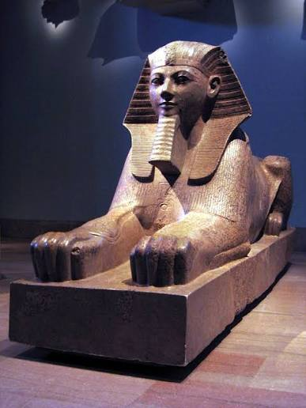

METROPOLITAN
Nyu-York shahridagi Metropoliten san'at muzeyi ("The Met") — Shimoliy va Janubiy Amerikaning eng yirik san'at muzeyidir.
1870-yilda xalqqa san'at va ma'rifat ulashishni maqsad qilgan amerikalik jamoat arboblari va rassomlar tomonidan tashkil etilgan.
Doimiy kolleksiyasi 5,000 yillik insoniyat tarixini qamrab oluvchi 17 bo'limda 2 milliondan ziyod durdonalarni o'z ichiga oladi.
Manxettendagi Mashhur Beshinchi Avenyu (Museum Mile) va Sentral Park bo'yida salobatli joylashgan.
Dendur Ibodatxonasi — Nyu-Yorkdagi Qadimgi Misr Mo'jizasi
Dendur ibodatxonasi (The Temple of Dendur) — miloddan avvalgi 15-yilda Rim imperatori Avgust Qaysar buyrug'iga binoan Misrning Nubiya mintaqasida qurilgan qadimiy qumtosh ibodatxona majmuasidir. 1960-yillarda Asvon to'g'oni qurilishi tufayli uni suv bosish xavfi tug'ilganda, Misr hukumati YuNESKO qutqaruv operatsiyasiga qo'shgan hissasi uchun ibodatxonani AQShga sovg'a qilgan. The Met muzeyining Sakler qanotida maxsus shisha vitrina, tabiiy yorug'lik va suv havzasi bilan o'rnatilgan ushbu ibodatxona dunyodagi eng noyob muzey eksponatlaridan biri hisoblanadi.


1887 yilSomon Shlyapadagi Avtoportret
Vincent van GoghGollandiyalik daho rassomning Parij davridagi eng yorqin va ifodali avtoportreti.

1787 yilSokratning O'limi
Jacques-Louis DavidFalsafiy jasorat, erkin tafakkur va neoklassik qat'iyatni mujassam etgan epik kartina.

1851 yilVashington Delaver Daryosida
Emanuel LeutzeAQSh mustaqillik kurashining eng mashhur va ilhomlantiruvchi monumental durdonasi.

1831 yilKanagavadagi Buyuk To'lqin
Katsushika HokusaiYaponiya va jahon tasviriy san'atining eng taniqli va eng ko'p nusxalangan gravyurasi.

Mil. avv. 1470Hatshepsutning Granit Sfinksi
Ayol Fir'avn Davri Merosi7 tonnalik qizil granitdan ishlangan, shohona soqol va sfinks tanasida tasvirlangan nodir yodgorlik.
 Ritsarlik San'ati
Ritsarlik San'ati
Genrix II Qirollik Zirhi
Uyg'onish Davri YevropasiOddiy jangovar kiyim emas, balki po'lat ustiga oltin va kumushdan suvi yuritib ishlangan mukammal san'at asari
The Met Muzeyi Majmualari
Nyu-Yorkdagi asosiy bino va o'rta asr me'morchiligi markazi
The Met Fifth Avenue
Manxettendagi 5-Avenyuda joylashgan asosiy bino 2 million kvadrat futdan ortiq maydonga ega. Bu yerda Qadimgi Misr, Amerika qanoti, Qurol-yarog'lar zali, Zamonaviy san'at va Kiyim-kechak instituti mavjud.
- Dendur Ibodatxonasi va Sakler Qanoti
- Amerika Qanoti va Jorj Vashington portretlari
- Ritsarlar zali va o'rta asr sovutlari
- Tomdagi mashhur Roof Garden bog'i (Central Park ko'rinishi)
The Met Cloisters
Manxetten shimolidagi Fort Trion Parkida joylashgan filial bo'lib, o'rta asr Yevropa abbatliklari va monastirlari arxitekturasi asosida qurilgan. O'rta asr gobelenlari, vitrajlari va relikviyalari saqlanadi.
- "Yakkashox ovlanishi" (The Unicorn Tapestries) gobelenlari
- Fransiya va Ispaniyadan keltirilgan haqiqiy monastir hovlilari
- O'rta asr dorivor o'simliklar bog'i
- Qadimiy vitraj oynalari va tilla qadahlar
Yevropa Tasviriy San'ati Bo'limi
13-asrdan 20-asrgacha bo'lgan Yevropa san'atining eng boy kolleksiyalaridan biri. Rembrandt, Vermeer, Monet, Degas, Van Gogh, Cezanne va boshqa yuzlab buyuk ustalar asarlari jamlangan.
- Rembrandtning 30 dan ortiq original kartinalari
- Yan Vermeerning 5 ta nodir asari (dunyoda jami 34 ta)
- Klod Monetning "Nilufarlar" turkumi
- Fransuz Impressionizm va Post-Impressionizm zallari
Tashrif Buyuruvchilar Uchun Qo'llanma
The Met muzeyiga sayohat qilish bo'yicha zarur ma'lumotlar
Ish Tartibi
Yakshanba – Seshanba, Payshanba: 10:00 – 17:00
Juma va Shanba: 10:00 – 21:00 (Kechki soatlar)
Chorshanba: Yopiq (Dam olish kuni).
Chipta Narxlari
Kattalar uchun: $30
Talabalar uchun: $17
12 yoshgacha bolalar uchun: Bepul
Bitta chipta The Met Fifth Ave va The Met Cloisters uchun amal qiladi.
Manzil & Transport
Manzil: 1000 5th Ave, New York, NY 10028, USA
Metro bekatlari: 86th St (4, 5, 6 liniyalar).
Central Park va 5-Avenyu kesishmasida joylashgan.
Foydali Maslahatlar
• Cantora Roof Garden baridan Central Park va osmono'par binolar manzarasini tomosha qiling.
• The Met Audio Guide ilovasidan bepul foydalaning.
• Katta ryukzaklar qabul qilinmaydi.
Boshqa Dunyo Muzeylarini Kashf Qiling
MuseWiki bo'ylab sayohatni davom ettiring